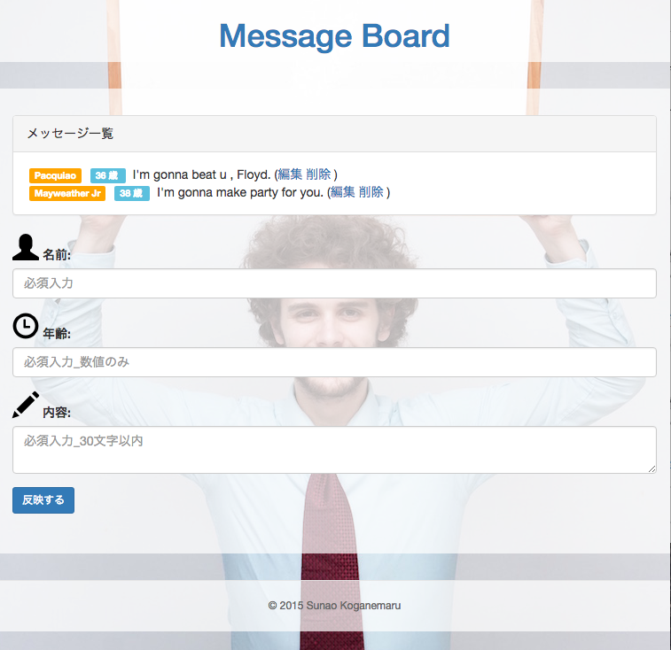

WORKS | 製作物一覧
サービス紹介
Ruby on Railsをマスターすべく奮闘中。
2015年９月中旬から学習した成果物をご紹介いたします。
| 作品名 | 内容 | 作成日 |
|---|---|---|
| メッセージボード  |
ユーザーが名前と内容を送信するとデータベースに保存し、伝言が残せるサービス
|
2015/10/15 |
Twitterクローン
|
Twitterのようにステータスを更新してFriendなどに通知する、Twitterライクなウェブサービス
|
2015/10月下旬完成予定 |
| モノリスト
|
AmazonのProduct Advertising APIを用いてAmazonの商品を検索し、自分が持っているもの・欲しい物を共有するサービス
2015/11月中旬完成予定 |
|
| オリジナルサービス
|
製作予定
2015/11月下旬予定 |
|